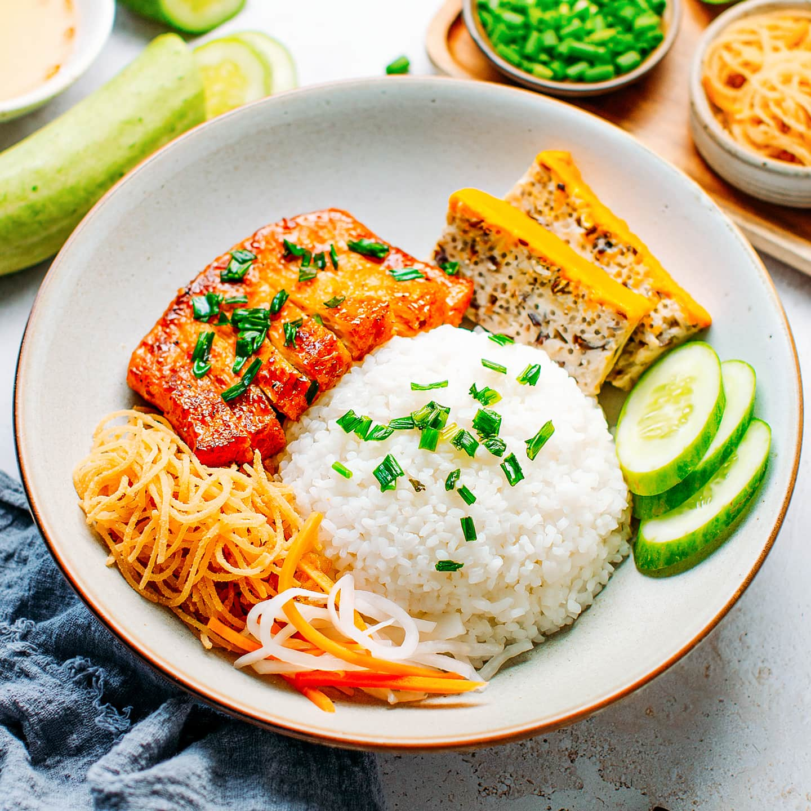

Cơm Tấm Recipe
Home

Description
A classic Vietnamese broken rice dish, usually served with grilled pork (sườn),
shredded pork skin, and a fried egg, accompanied by pickled vegetables
and fish sauce.
Ingredients
- Broken Rice
- Pork Chops
- Fish Sauce
- Sugar
- Garlic
- Shallots
- Pickled Carrots
- Pickled Daikon
- Scallion Oil
- Fried Egg
- Cucumber
Steps
- Marinate pork chops with fish sauce, sugar, garlic, and shallots.
- Grill pork until caramelized.
- Cook broken rice and prepare pickled carrots and daikon.
- Fry an egg and drizzle scallion oil over rice.
- Serve with grilled pork, egg, pickles, and fish sauce.